Amazon reviews are important whether you sell on Amazon Seller Central or Vendor Central. Below we’ll clarify the difference between the types of reviews and then guide you on best practices toward managing both positive and negative reviews.
Amazon Product Reviews vs. Seller Feedback Reviews
The first step toward gaining better reviews is to understand that there are two types of reviews: Product Reviews & Seller Feedback Reviews. It’s vital to understand the difference.
Product Reviews are the reviews you see while shopping:
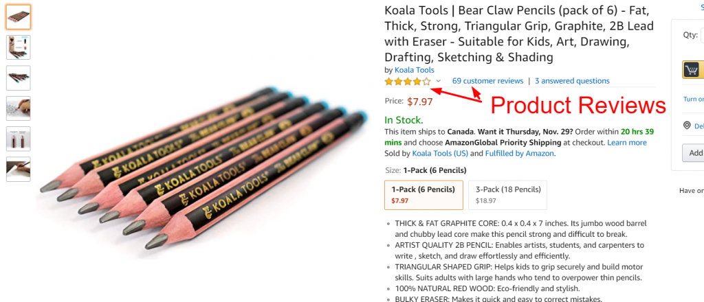
These reviews can make or break your success on Amazon. For obvious reasons, every seller should aspire to attain between a 4.0 – 5.0 average. Ironically, buyers trust a 4.5 stars average more than a 5.0 stars average, so 4.5 is optimal.
Seller Feedback Reviews are the second type of reviews and are also very important. They’re not as likely to sway customers’ buying decisions as your product reviews, but they play their own important role in your Amazon success.
In order to find those reviews you’ll first need to drill down on your seller profile:
Here’s where you’ll see those reviews:
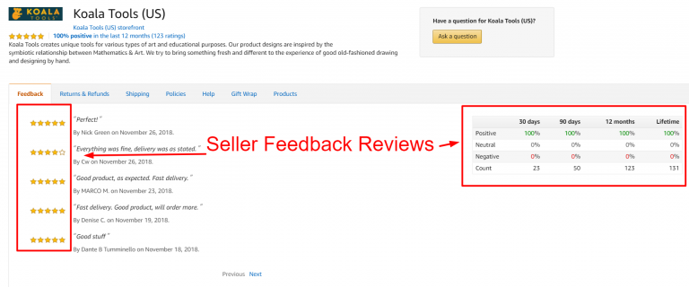
How a Buyer Creates Reviews
Now let’s step into the shoes of our buyers for a little bit. Once we buy an item, Amazon will usually send us an email soliciting our participation in reviewing both the Seller and the Product.
I recently made a purchase on Amazon.ca. Amazon.ca subsequently sent me an email, which I’ll illustrate below. Please note that Amazon asks for both Seller Feedback Review and Product Review in the same email, though the former occupies the top of the email, which means people are more likely to respond to it: 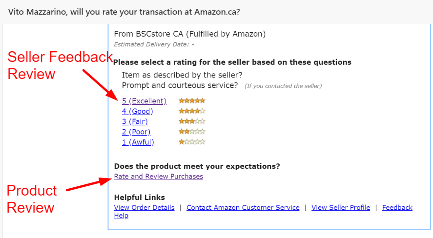 After clicking on ‘5 (Excellent)’ in the email a new tab in my browser opens up that looks like this: 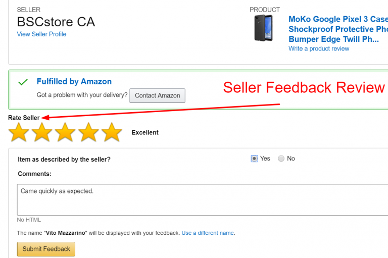
As we can see it’s very straightforward. At this point, most buyers feel as though they’re done helping buyer’s out (or berating their products).
However, only by clicking the link that says ‘Rate and Review Purchases’ below can a buyer leave a Product Review. By clicking the link the following tab should open in the buyer’s browser: 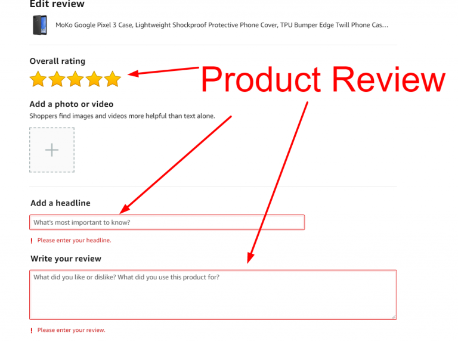 Fortunately for sellers, Amazon allows buyers to change their Product Reviews . Below let’s look at a review I’ve left for the product I recently purchased (referenced above): 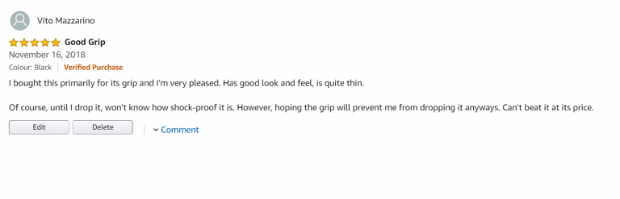
Despite the fact that I’ve left a Product Review, as a buyer I can still navigate to my recent orders and access and / or change that very same Product Review: 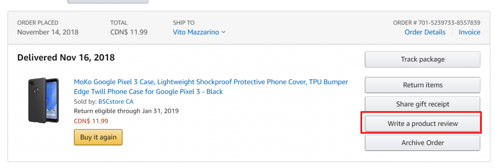 I just changed that review by merely adding the words ‘Thank you!’. Please see those changes here: 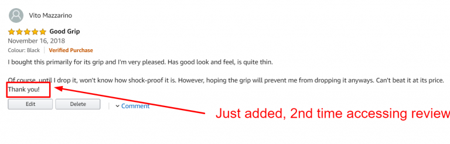 This demonstrates how easy it is for a buyer to change his / her review.
Hopefully this clarifies the difference between the two types of reviews and how buyers see and interact with them. With this understanding we’re now equipped with the ability to manage each type of review to the best of our abilities.
Addressing Negative Product Reviews: Hug Your Haters
You may be asking yourself, ‘So now what?’
Working within Amazon’s rules, the best action a seller can take is to adopt an attitude of ‘Hug Your Haters’.
I’ve seen many articles in Amazon Seller forums with recommendations from experienced buyers to ignore bad reviews, simply dismissing them because they’re insensitive complainers. In addition, Sellers in these forums often scream foul play and that competition is attempting to sabotage them. Either may be true, and if you see an inordinate number of negative reviews that don’t seem to add up, doing nothing may make sense in some instances. On the other hand, you may also risk alienating a genuine customer with a sincere gripe.
Additionally, I’ve seen sellers suggest firing back at bad reviews with statements such as,‘You’re ruining my livelihood (or that of my family), how could you be so selfish?’. To that I have one thing to say: Nobody on Amazon who purchases a product cares about you. People purchase products on Amazon (and everywhere for that matter) for their own gratification, not because they’re interested in supporting you or your family. After all, they too must support themselves and / or their families.
Amazon treats its customer as the crown jewels of its ecosystem. As a Seller, you’re a second rate citizen in the eyes of Amazon. There’s no escaping this, nor will Amazon ever apologize for it. It’s part of Amazon’s core philosophy that the entire company prioritizes the customer over all else. It’s in Sellers’ best interests to embrace this reality. Conversely, Sellers can suffer dearly trying to fight it or bemoan it.
As an Amazon Seller, try to empathize with buyers who’ve left bad reviews and work with them to correct any problems. By doing so you take the ‘high ground’ and can distinguish yourself from other sellers through your superior level of service.
Step 1: Act Quickly
Don’t wait. Try to monitor and react to negative reviews within 72 hours. The longer you wait the more difficult it is to address a problem, and the less likely it is for a customer to think you’ve taken the problem seriously.
Step 2. Keep Informed of the Rules
At the time of this writing, Amazon Terms of Service (TOS) clearly prevents us from soliciting buyers to leave positive reviews. In fact here is a comprehensive ‘Code of Conduct’ regarding sellers and how they can (and cannot) handle reviews:
https://sellercentral.amazon.com/gp/help/external/201972140
Here is a quick summary of 2 of the more important points in that policy: A seller offers to provide a refund or reimbursement after the buyer writes a review (including reimbursement via a non-Amazon payment method)… A seller offers a refund or other compensation to a reviewer in exchange for changing or removing their review.’
‘The following are examples of prohibited activities. This is not an all-inclusive list…
Though Amazon prohibits a Seller from trying to offer a ‘refund’ or ‘reimbursement’ or ‘other compensation’ once the review is written, Amazon makes no mention of an‘exchange’. If there is any case in which the item is faulty or defective, offer to send a replacement immediately.
Step 3: Determine through Which Medium to Respond
You now have several options when attempting to contact the person who wrote the review:
Respond to them via the commenting area where they left the review OR
Respond to them via direct messaging within your ‘Manage Orders’ area.
The advantage of option #1 is that your prompt customer service is becomes visible to the general public, which can go a long way to gaining trust with both the upset buyer and future buyers.
The disadvantage of option #1 is that you can no longer respond in the comment areas with your ‘Seller’ badge, as Amazon has removed this capability. You can only respond through your personal account and would need to say something like, ‘Hi Susan, this is Richard, the owner of XYZ brand. I’m very sorry to hear about your experience….’
If you don’t like this option, option #2 allows you to avoid going public and to directly interact with your buyer as your brand / company. The negative side of this is that you will need to scour your ‘Manage Orders’ and look through each order to match the first name with the first name on the order to pinpoint the correct buyer. If their profile name (i.e. ‘badbuyer’) does not match their real name (i.e. Bill King) this can be challenging.
Step 4. Craft Your Message
Hopefully you’ve hopped on this matter quickly, which will convey to your customer that you care.
The next thing is to craft your message to further convey your level of concern and empathy with their discontent. Here is a boilerplate form letter:
‘Dear [CUSTOMER]:
I’m deeply concerned with [MISTAKE] and want to get this solved. We pride ourselves in the quality of our merchandise, but we admittedly make mistakes. As [BRAND] we value every one of our customers’ satisfaction. Please contact us immediately with your shipment number and we’ll gladly exchange your item.
If there is something else we can do to rectify the matter please specify and we’ll attempt our best to accommodate your request. I personally look forward to helping you and earning back your trust.
Sincerely,
[OWNER, BRAND]’
Please notice in this letter we immediately offer an exchange, of which there is no language in Amazon’s TOS. Nevertheless, we do offer an alternative when we say, ‘If there is something else we can do to rectify the matter please specify and we’ll attempt our best to accommodate your request.’
It’s debatable whether or not we’re entering into a grey area here, especially if a customer then requests reimbursement. However, we are not explicitly offering one and by leaving the option open for a solution we’re truly offering the to give the customer final say.
Step 5. Follow through
Action speaks louder than words. Do precisely what you’ve promised your customer and do so promptly.
Addressing Negative Seller Feedback Reviews: Pay Attention and Improve Your Ratings
When addressing negative seller feedback reviews, fortunately Sellers can exert a greater amount of control. Amazon Seller Central has an automated dispute mechanism that we can often employ to our benefit.
There are 2 typical occurrences that merit its use:
Because Seller Feedback Reviews are at the top of Amazon’s automated emails to customers, we often see the following phenomenon: Customers mistakenly leave their Product Review in the Seller Feedback Review form. We can ask Amazon to remove such reviews.
In addition, if you store your products in FBA, and receive a shipping based complaint, you have the right to ask Amazon to remove the complaint because shipping is Amazon’s responsibility and not yours. Here are examples of such complaints:
- Late Shipment
- Product arrived broken (in some cases)
- Wrong product arrived
In order to remove a Seller Feedback Review for either of the two instances explained above you must do the following:
-
Step 1: Go to Performance > Feedback on the top navigation menu:
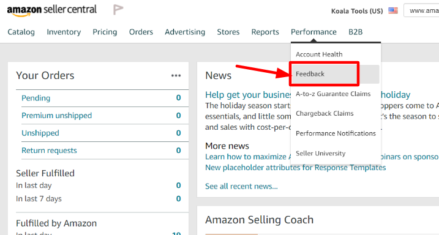 -
Step 2: Find the review you want to dispute and click Actions:
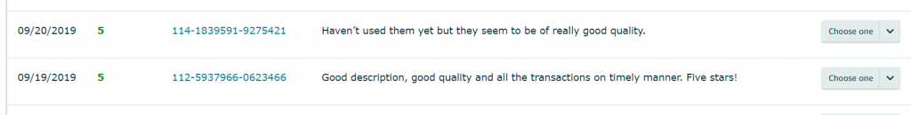 -
Step 3: Click Yes:
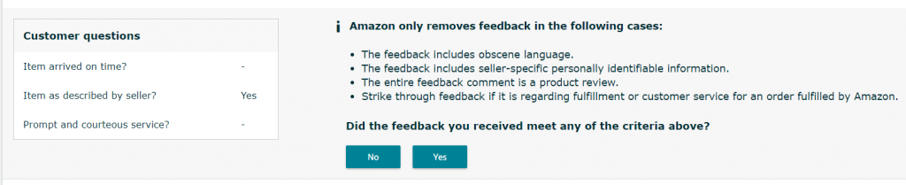
****Please note: DO NOT ABUSE THIS FUNCTION. Amazon’s system automatically removes the review. However, if you perform this too many times the process will then undergo manual review by a person.
In sum, staying on top of reviews is about speed and empathy. Employ both and you’ll take positive steps toward protecting your customer’s experience and brand name.